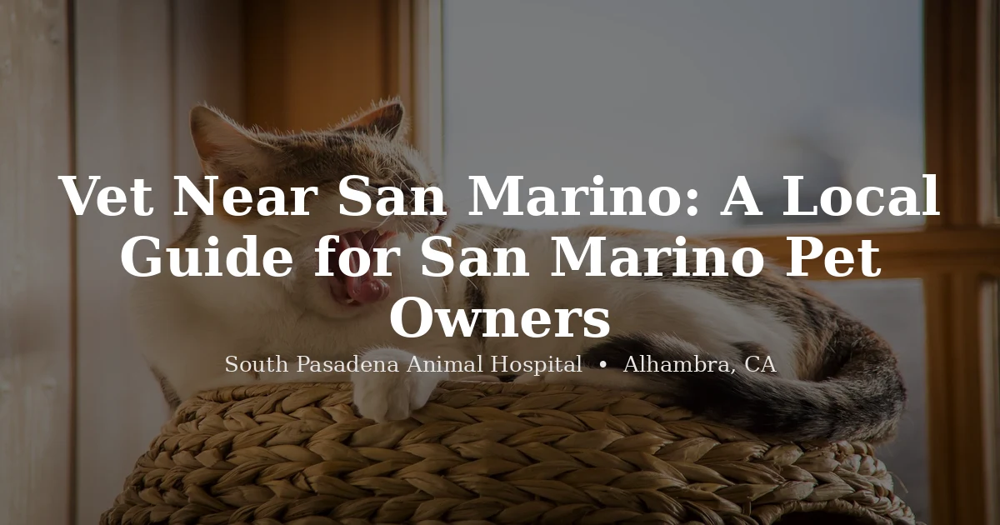

June 10, 2026 · 6 min read
Vet Near San Marino: A Local Guide for San Marino Pet Owners

San Marino is a city of routines — morning walks around Lacy Park, weekend mornings at the Huntington, tree-lined streets where everybody seems to know everybody's dog by name. When it comes to picking a vet, that same sense of "who do you actually trust" applies. A polished website only tells you so much. What matters is whether the practice will be there when your pet needs it — quickly, honestly, and without surprises.
South Pasadena Animal Hospital is about seven minutes south of San Marino on Huntington Drive, and we see a steady stream of San Marino families for exactly that reason. Here's what we think is worth knowing if you're searching for a vet near San Marino.
Seven minutes matters more than it sounds
On paper, seven minutes doesn't sound like much. In practice, it's the difference between "let's go now" and "let's wait and see how she's doing in the morning." Pets get sick at inconvenient times — Sunday evening, the start of a workday, the middle of a dinner you're hosting. A short drive means you're more likely to act on a concern when it's still small, rather than after it's grown into something more serious and more expensive.
The route from San Marino is straightforward: head south on Huntington Drive through South Pasadena, then turn onto Main Street. You'll find us on the left, with street parking right outside — no garages, no meters, no circling the block.
In-house diagnostics — because some things can't wait for results
Not every veterinary practice can run bloodwork, take X-rays, or perform surgery on-site. Some send labs out and wait a day or two for results — fine for routine wellness checks, less fine for a dog that's suddenly stopped eating or a cat that's straining in the litter box.
At SPAH, we run in-house diagnostics, have digital radiography on-site, and perform soft-tissue surgeries — spays, neuters, mass removals, and more — without sending your pet somewhere else for the basics. When evaluating any practice, it's worth asking directly: do you have in-house labs? Digital X-ray? Can you do the procedure here, or will we be referred elsewhere? Our full services list answers most of those questions up front.
Pricing you can actually plan around
Veterinary costs are a real concern for most households, San Marino included — and the practices that handle this well are the ones willing to put numbers on the table before you commit to anything. We publish our pricing online for exactly that reason, and before recommending treatment, we'll walk you through what it involves and what it costs, including alternatives where they exist.
Independently owned, with the same doctors year after year
Corporate veterinary groups have grown quickly across the San Gabriel Valley over the past several years. They're not automatically worse — but they tend to run on higher patient volume, more staff turnover, and protocols set by people who never meet your pet. An independent practice runs differently. Dr. Chiang and Dr. Navia built SPAH from scratch, and they're the ones whose names are actually on the door — not a regional office somewhere managing things from a spreadsheet.
If your household includes more than a dog or cat
San Marino has more than its share of exotic pet owners — rabbits, tortoises, parrots, and the occasional bearded dragon show up in our schedule from local addresses fairly often. If that's your household, finding a single practice that handles everything matters, because getting referred to a separate exotic specialist 30 minutes away isn't exactly convenient when your bunny stops eating on a Friday night.
We see reptiles (bearded dragons, geckos, tortoises, snakes), birds (cockatiels, parrots, conures, finches), rabbits, guinea pigs, hamsters, and other small mammals — alongside dogs and cats, all in one place. Exotic appointments are currently open to new patients. Book here or call (626) 441-1314.
What a good first visit looks like
A well-run first appointment follows a pretty simple structure: a real intake conversation, a thorough physical exam, a clear explanation of what was found, and a plan with costs laid out before anything happens. You shouldn't leave more confused than when you walked in. If a vet can explain their reasoning in plain language and welcomes your questions, that's usually a good sign you've found the right fit.
Questions we hear often
What is the closest vet to San Marino?
South Pasadena Animal Hospital at 3116 W Main St in Alhambra is about seven minutes south of San Marino via Huntington Drive — one of the closest full-service practices to the city. We offer comprehensive care for dogs, cats, and exotic pets with pricing published online.
What should San Marino pet owners look for in a vet?
Proximity, in-house diagnostics, transparent pricing, independent ownership, and whether the practice sees your type of pet — including exotics if your household has them. Reading recent reviews for the specific veterinarian you'd see helps set expectations too.
Does SPAH see exotic pets for San Marino residents?
Yes — and exotic appointments are open to new patients. We see reptiles, birds, rabbits, guinea pigs, hamsters, and other small mammals. Book a vet appointment and note your pet's species so we can prepare.
How far is South Pasadena Animal Hospital from Lacy Park?
About seven minutes by car. Head south on Huntington Drive through South Pasadena, then turn onto Main Street — we're on the left, with street parking right out front. The same route works well from the Huntington Library and Gardens.
Is SPAH accepting new patients from San Marino?
Yes — we're now accepting new patients, including dogs, cats, and exotic pets. Book through our online portal or call (626) 441-1314.